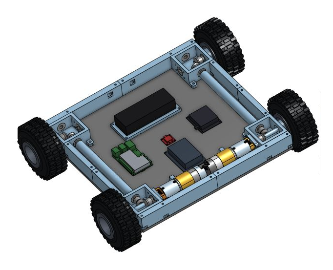
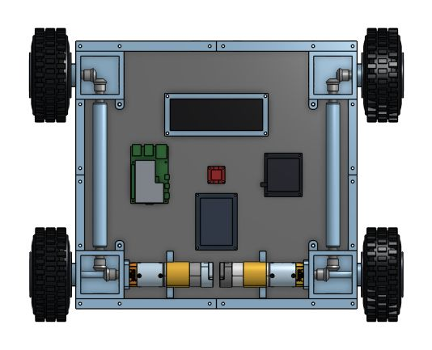

lunar construction rover
the door has been opened for humanity's presence in space, and the scale of operations will inevitably skyrocket.
industrializing the moon will be the first step in supporting this growth, and robots will be the ones to do it.

· Design notes
V0 Locomotion Prototype
The goal for v0 was a low-cost locomotion base that I could manufacture without access to precision machining equipment. The main focus was getting the drivetrain, chassis, and electronics into a buildable layout, with payload handling and manipulation left for a later version.
What does v0 need to do?
While lunar locomotion faces different gravity and terrain conditions than on Earth, the fundamental questions of large-scale payload transport remain the same:
- Can it move the load?
- Can it control the load?
- Can it keep doing both over uneven terrain?
For a heavy lunar hauler, that means sustaining enough wheel torque to climb at a useful speed, steering through loose soil without digging in, and controlling speed on long descents. The wheels need to stay loaded enough to drive and brake over uneven ground, and the cargo needs to stay secure through turns, stops, and impacts.
For v0, I set a smaller set of targets. I wanted a 7–10 kg rover I could drive remotely across compact dirt and loose sand, with a 10° sand slope and a 4 cm rounded obstacle as the main mobility tests.
V0's Design
To answer those three questions, the starting point is determining the torque needed at each wheel. For a preliminary check I assumed a 10 kg loaded rover on Earth, 140 mm diameter wheels, a 10° incline, and all four wheels sharing the drive force equally.
| Load allowance | Torque (N·m) |
|---|---|
| Climbing the slopeAt the wheel | 0.30 |
| Including rolling resistanceAt the wheel | 0.47 |
| Including drivetrain lossesAt the transmission input | 0.58 |
| With a 2× safety factorProposed input sizing target | 1.17 |
Assumed rolling-resistance coefficient: 0.1. Transmission: 80% efficient, 1:1 gearing. Values use unrounded calculations.
Another notable early decision was to defer suspension until later versions. The main reason was manufacturing difficulty. I expected the linkages and rotating joints, particularly ball joints, to be difficult to print reliably. Buying those components and accommodating suspension movement in the drivetrain would add complexity and cost. I chose a rigid chassis for the initial prototype, with suspension remaining a high-priority improvement.
The first drivetrain layout I considered used four geared motors, one per wheel. Individual motors would eliminate the shafts connecting the front and rear wheels, but the biggest concern was cost. One solution was designing and printing my own gearboxes. However, that approach was quickly sidelined by their size and the difficulty of printing gears capable of carrying the required torque. Buying metal gears made the custom gearboxes even less cost-effective. Compact, low-cost gearboxes are worth revisiting in later iterations.
Reducing the number of motors to one or two seemed like the best way to cut costs while retaining 4WD. A single-motor design could use differentials to distribute power and Ackermann steering to turn. However, the differentials, steering linkage, and joints needed to drive the steered wheels added considerable manufacturing and assembly complexity. I chose a two-motor skid-steering setup, with one motor driving each side, to avoid those additional mechanisms.

Connecting the Front and Rear Wheels
The next question was how to connect the two wheels on each side. I considered a chain drive, but tensioning, enclosure size, and keeping sand out seemed more difficult to manage than aligning a longitudinal shaft and limiting its flex. I chose longitudinal driveshafts with bevel gears at the wheels.
Final Design Review
For an initial, low-cost prototype, this design seemed simple and effective. However, there are several mechanical concerns to address. Skid steering under load could cause the wheels to dig into loose soil. Lower-cost gearboxes would make it easier to explore individual wheel drives and more complex steering and suspension arrangements. Suspension remains a later improvement, while tipping stability needs to be checked during the current loaded slope and obstacle tests.
The thin PETG shafts are the first parts I would revisit. The set-screw connections between the shafts and gears are likely weak points, and shaft bending could disturb bevel-gear alignment. My preliminary torsion calculations also suggest limited torque capacity, so shaft twist and strength need physical testing.
The first tests will check shaft connections and twist, followed by loaded turning, slope climbing, and obstacle traversal. I’m also working on access to precision machining and metalworking equipment, along with funding for future iterations.